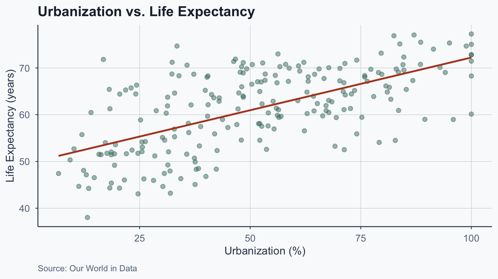
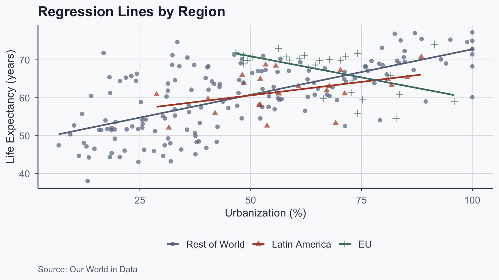
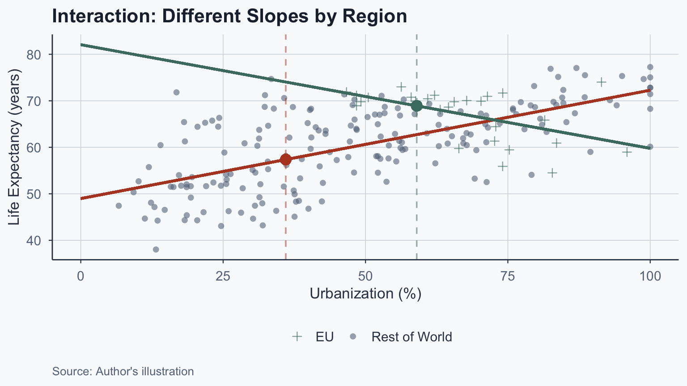
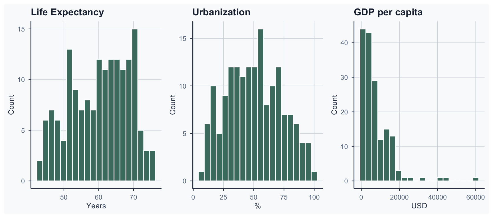
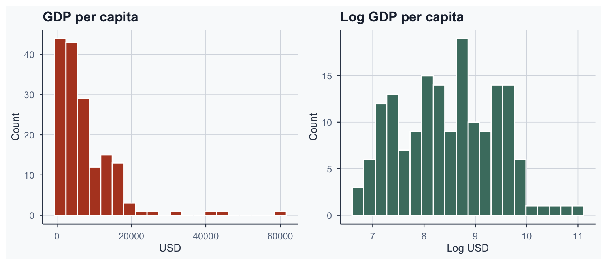
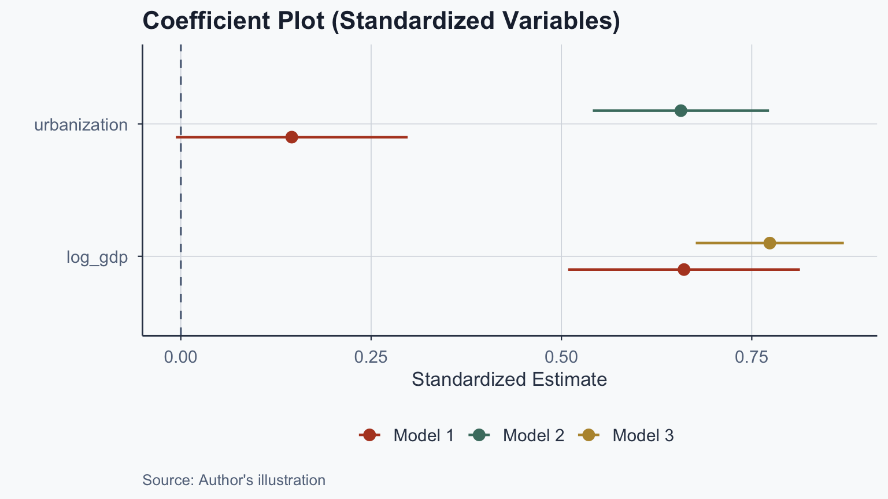
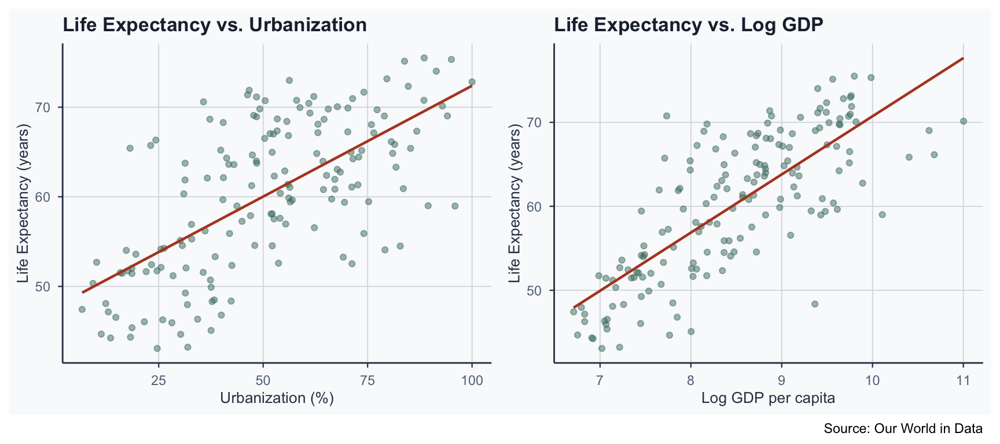
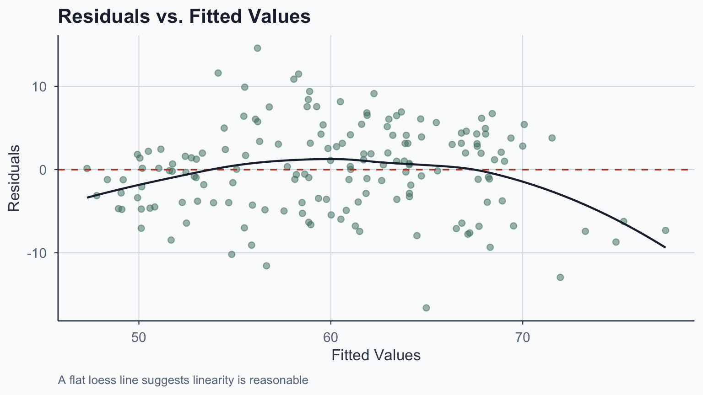

![]()
Call:
lm(formula = life_expectancy ~ urbanization, data = final_clean)
Residuals:
Min 1Q Median 3Q Max
-14.6401 -4.1417 -0.5023 5.0570 18.3322
Coefficients:
Estimate Std. Error t value Pr(>|t|)
(Intercept) 49.69309 1.07845 46.08 <2e-16 ***
urbanization 0.22533 0.01901 11.85 <2e-16 ***
---
Signif. codes: 0 '***' 0.001 '**' 0.01 '*' 0.05 '.' 0.1 ' ' 1
Residual standard error: 6.726 on 213 degrees of freedom
Multiple R-squared: 0.3973, Adjusted R-squared: 0.3945
F-statistic: 140.4 on 1 and 213 DF, p-value: < 2.2e-16Statistical Analysis
Lecture 10: Bivariate and Multivariate Regression
Introduction
From Bivariate to Multivariate
- Previously: bivariate regression (\(Y = bX + a\))
- Only one predictor influenced \(Y\)
- In practice, \(Y\) is determined by many factors
- Example: life expectancy depends on urbanization, income, education, …
- Today: multivariate regression with multiple predictors
Correlates of Life Expectancy

Bivariate vs. Multivariate
Bivariate Regression (Recap)
\[\hat{y} = \hat{\beta}_0 + \hat{\beta}_1 x_1 + \epsilon\]
- \(\hat{\beta}_0\): intercept (predicted \(Y\) when \(X = 0\))
- \(\hat{\beta}_1\): slope (change in \(Y\) per unit \(X\))
- \(\epsilon\): error term
Our Running Example
\[\widehat{\text{life expectancy}} = \hat{\beta}_0 + \hat{\beta}_1 \cdot \text{urbanization} + \epsilon\]

Bivariate Model in R
Interpreting the Bivariate Model
\[\widehat{\text{life expectancy}} = 49.693 + 0.225 \cdot \text{urbanization}\]
- One unit increase in urbanization \(\rightarrow\) 0.225 year increase
- But what if this relationship differs across regions?
Regional Differences

Regional Slopes Differ
| Region | Slope (\(\hat{\beta}_1\)) | Direction |
|---|---|---|
| All countries | 0.225 | Positive |
| Latin America | 0.142 | Positive |
| EU | -0.223 | Negative |
- The EU shows a negative relationship
- Different samples \(\rightarrow\) different slopes
Why Is the EU Slope Negative?
Two issues drive this result:
- Range restriction: no EU country has urbanization below 40%
- The EU line is fit to a narrow band of \(X\) values
- Small, noisy samples amplify estimation error
- Omitted variables: EU countries are wealthy, well-governed, and educated
- Once urbanization is already high, further increases may not improve health
- Other factors (healthcare, institutions) dominate at high development levels
- This is why we need multivariate models to disentangle effects
Interaction Effects
Adding a Dummy Variable
We can estimate regional effects with dummy variables:
\[\text{life exp.} = \beta_0 + \beta_1 \cdot \text{EU} + \epsilon\]
Call:
lm(formula = life_expectancy ~ eu, data = final_clean)
Residuals:
Min 1Q Median 3Q Max
-22.390 -6.963 1.530 6.415 16.835
Coefficients:
Estimate Std. Error t value Pr(>|t|)
(Intercept) 60.4182 0.6106 98.946 < 2e-16 ***
eu 6.6955 1.7231 3.886 0.000136 ***
---
Signif. codes: 0 '***' 0.001 '**' 0.01 '*' 0.05 '.' 0.1 ' ' 1
Residual standard error: 8.372 on 213 degrees of freedom
Multiple R-squared: 0.0662, Adjusted R-squared: 0.06181
F-statistic: 15.1 on 1 and 213 DF, p-value: 0.0001362Interpreting the EU Dummy
- \(\hat{\beta}_0 = 60.418\): average life expectancy for non-EU countries
- \(\hat{\beta}_1 = 6.696\): EU countries live 6.696 years longer
- Life expectancy in EU: \(60.418 + 6.696 = 67.114\)
- Significant at 0.1% level (\(p < 0.001\))
Adding Multiple Dummies
\[\text{life exp.} = \beta_0 + \beta_1 \cdot \text{EU} + \beta_2 \cdot \text{Latam} + \epsilon\]
Call:
lm(formula = life_expectancy ~ eu + latam, data = final_clean)
Residuals:
Min 1Q Median 3Q Max
-22.182 -6.754 1.176 6.398 17.043
Coefficients:
Estimate Std. Error t value Pr(>|t|)
(Intercept) 60.210 0.652 92.341 < 2e-16 ***
eu 6.904 1.739 3.971 9.82e-05 ***
latam 1.704 1.864 0.914 0.362
---
Signif. codes: 0 '***' 0.001 '**' 0.01 '*' 0.05 '.' 0.1 ' ' 1
Residual standard error: 8.376 on 212 degrees of freedom
Multiple R-squared: 0.06986, Adjusted R-squared: 0.06109
F-statistic: 7.962 on 2 and 212 DF, p-value: 0.0004634Interpreting Two Dummies
- \(\hat{\beta}_0 = 60.21\): life expectancy for rest of world
- \(\hat{\beta}_1 = 6.904\): EU countries live 6.904 years more
- \(\hat{\beta}_2 = 1.704\): Latin America lives 1.704 years more
- EU coefficient is significant (\(p < 0.001\))
- Latin America coefficient is not significant
Adding Urbanization as a Control
\[\text{life exp.} = \beta_0 + \beta_1 \text{EU} + \beta_2 \text{Latam} + \beta_3 \text{urbanization} + \epsilon\]
Call:
lm(formula = life_expectancy ~ eu + latam + urbanization, data = final_clean)
Residuals:
Min 1Q Median 3Q Max
-16.0178 -3.8761 -0.1325 4.6590 18.3088
Coefficients:
Estimate Std. Error t value Pr(>|t|)
(Intercept) 49.85172 1.07619 46.323 <2e-16 ***
eu 2.67415 1.44168 1.855 0.065 .
latam -0.76122 1.50643 -0.505 0.614
urbanization 0.21728 0.01975 11.000 <2e-16 ***
---
Signif. codes: 0 '***' 0.001 '**' 0.01 '*' 0.05 '.' 0.1 ' ' 1
Residual standard error: 6.693 on 211 degrees of freedom
Multiple R-squared: 0.4089, Adjusted R-squared: 0.4004
F-statistic: 48.64 on 3 and 211 DF, p-value: < 2.2e-16Effect of Adding Controls
- Urbanization: 0.217 increase per unit, holding everything else constant
- EU coefficient reduced in significance after controlling for urbanization
- This is a partial effect: holding other variables constant
The Interaction Model
What if the slope of urbanization differs by region?
\[\text{life exp.} = \beta_0 + \beta_1 \text{EU} + \beta_2 \text{urbanization} + \beta_3 (\text{EU} \times \text{urbanization}) + \epsilon\]
mod_int <- lm(life_expectancy ~ eu + urbanization + eu_urbanization,
data = final_clean)
summary(mod_int)
Call:
lm(formula = life_expectancy ~ eu + urbanization + eu_urbanization,
data = final_clean)
Residuals:
Min 1Q Median 3Q Max
-14.0296 -3.7422 -0.5109 3.9937 18.9145
Coefficients:
Estimate Std. Error t value Pr(>|t|)
(Intercept) 48.97896 1.03992 47.099 < 2e-16 ***
eu 33.09677 6.59550 5.018 1.11e-06 ***
urbanization 0.23317 0.01896 12.296 < 2e-16 ***
eu_urbanization -0.45603 0.09714 -4.694 4.81e-06 ***
---
Signif. codes: 0 '***' 0.001 '**' 0.01 '*' 0.05 '.' 0.1 ' ' 1
Residual standard error: 6.372 on 211 degrees of freedom
Multiple R-squared: 0.4641, Adjusted R-squared: 0.4565
F-statistic: 60.91 on 3 and 211 DF, p-value: < 2.2e-16Interpreting Interaction Coefficients
| Coefficient | Value | Meaning |
|---|---|---|
| \(\hat{\beta}_0\) | 48.979 | Intercept for non-EU |
| EU | 33.097 | Offset in intercept for EU |
| Urbanization | 0.233 | Slope for non-EU |
| EU \(\times\) Urbanization | -0.456 | Offset in slope for EU |
- EU intercept: \(48.979 + 33.097 = 82.076\)
- EU slope: \(0.233 + (-0.456) = -0.223\)
What Is an Interaction Effect?
The effect of urbanization depends on EU membership:
- Non-EU: +1 urbanization \(\rightarrow\) 0.233 year increase
- EU: +1 urbanization \(\rightarrow\) -0.223 year decrease
An interaction exists when one variable’s effect depends on another
Indicators vs. Interactions
Indicators (dummy variables):
- Show changes in the intercept for specific groups
- EU and Latin America are indicators
Interactions:
- Show changes in the slope for specific groups
- EU \(\times\) Urbanization is an interaction
Predicted Values: Non-EU
For non-EU countries (\(\text{EU} = 0\)):
\[\hat{y} = 48.979 + 0.233 \cdot \text{urbanization}\]
Example: urbanization = 36% (a typical developing-country value)
\[\hat{y} = 48.979 + 0.233 \times 36 = 57.367\]
Predicted Values: EU
For EU countries (\(\text{EU} = 1\)):
\[\hat{y} = 82.076 + -0.223 \cdot \text{urbanization}\]
Example: urbanization = 59% (close to the EU median)
\[\hat{y} = 82.076 + -0.223 \times 59 = 68.919\]
Visualizing the Interaction

Multivariate Regression
The General Equation
\[\hat{y} = \hat{\beta}_0 + \hat{\beta}_1 x_1 + \hat{\beta}_2 x_2 + \ldots + \hat{\beta}_k x_k + \epsilon\]
- \(\hat{\beta}_0\): intercept
- \(\hat{\beta}_1 \ldots \hat{\beta}_k\): slopes for each predictor
- \(\epsilon\): error term
- Each \(\hat{\beta}_j\) is a partial effect, holding other variables constant
9 Steps to Exploratory Analysis
The 9 Steps
- Write the equation of interest
- Explore variable data types and values
- Compute summary statistics
- Compute correlation coefficients
- Run a regression
- Run alternative specifications
- Interpret the results
- Create coefficient plots
- Create scatter plots
Step 1: Write the Equation
\[\text{life expectancy} = \beta_0 + \beta_1 \cdot \text{urbanization} + \beta_2 \cdot \text{GDP} + \epsilon\]
- \(\beta_0\): intercept
- \(\beta_1\): effect of urbanization
- \(\beta_2\): effect of GDP
- \(\epsilon\): error term
Step 2: Explore Data Types
Rows: 165
Columns: 7
$ Code <chr> "AFG", "AGO", "ALB", "ARE", "ARG", "ARM", "AUS", "AUT"…
$ Entity <chr> "Afghanistan", "Angola", "Albania", "United Arab Emira…
$ life_expectancy <dbl> 45.38333, 45.08466, 68.28611, 66.14722, 65.40805, 67.1…
$ urbanization <dbl> 18.611754, 37.539705, 40.444164, 80.680263, 85.282148,…
$ gdp <dbl> 1183.9188, 2989.0206, 4255.4923, 43458.1587, 8653.3394…
$ continent <chr> "Other", "Other", "Other", "Other", "Latam", "Other", …
$ log_gdp <dbl> 7.076585, 8.002701, 8.355966, 10.679554, 9.065701, 9.0…Step 3: Summary Statistics
| Variable | Mean | Median | SD | Min | Max |
|---|---|---|---|---|---|
| life_expectancy | 60.20 | 61.09 | 8.42 | 43.08 | 75.50 |
| urbanization | 50.74 | 51.66 | 22.35 | 6.67 | 100.00 |
| gdp | 7434.08 | 4796.66 | 8007.71 | 819.89 | 60020.87 |
Step 3b: Check Distributions

Why Log GDP?
GDP is right-skewed \(\rightarrow\) take the logarithm for normality

Step 4: Correlation Matrix
| life_expectancy | urbanization | log_gdp | |
|---|---|---|---|
| life_expectancy | 1.000 | 0.657 | 0.774 |
| urbanization | 0.657 | 1.000 | 0.773 |
| log_gdp | 0.774 | 0.773 | 1.000 |
- All variables are positively correlated
- Log GDP has the strongest correlation with life expectancy
Step 5: Run a Regression
Call:
lm(formula = life_expectancy ~ urbanization + log_gdp, data = final_full)
Residuals:
Min 1Q Median 3Q Max
-16.614 -3.918 0.157 3.385 14.587
Coefficients:
Estimate Std. Error t value Pr(>|t|)
(Intercept) 7.22280 4.86021 1.486 0.1392
urbanization 0.05490 0.02926 1.876 0.0624 .
log_gdp 5.91834 0.69546 8.510 1.11e-14 ***
---
Signif. codes: 0 '***' 0.001 '**' 0.01 '*' 0.05 '.' 0.1 ' ' 1
Residual standard error: 5.31 on 162 degrees of freedom
Multiple R-squared: 0.6072, Adjusted R-squared: 0.6023
F-statistic: 125.2 on 2 and 162 DF, p-value: < 2.2e-16Step 6: Alternative Specifications
| Model | Term | Estimate | Std. Error | p-value |
|---|---|---|---|---|
| Model 1: Both | urbanization | 0.055 | 0.029 | 0.062 |
| Model 1: Both | log_gdp | 5.918 | 0.695 | 0.000 |
| Model 2: Urb. only | urbanization | 0.247 | 0.022 | 0.000 |
| Model 3: GDP only | log_gdp | 6.928 | 0.444 | 0.000 |
Step 7: Interpret the Results
- Model 1: urbanization effect = 0.055 (holding GDP constant)
- Model 2: urbanization effect = 0.247 (bivariate)
- Model 3: log GDP effect = 6.928 (bivariate)
- Urbanization coefficient drops substantially from Model 2 to Model 1
- GDP coefficient is stable across models
- GDP is a more robust predictor of life expectancy
Log Interpretation: The Derivation
Why does \(\hat{\beta}/100\) give the effect of a 1% increase?
From calculus, for small changes:
\[\log(x + \Delta x) - \log(x) \approx \frac{\Delta x}{x}\]
A 1% increase means \(\Delta x / x = 0.01\), so \(\Delta \log(x) \approx 0.01\)
\[\Delta Y = \hat{\beta} \times \Delta \log(x) = \hat{\beta} \times 0.01 = \frac{\hat{\beta}}{100}\]
Log Interpretation: Applied
- Log GDP coefficient \(\approx 5.918\)
- 1% GDP increase \(\rightarrow\) \(5.918 \times 0.01 = 0.0592\) year increase
- 10% GDP increase \(\rightarrow\) \(5.918 \times 0.10 = 0.592\) year increase
- This level-log rule applies whenever \(X\) is logged
Step 8: Coefficient Plots

Why Standardize?
- Raw coefficients have different scales (% vs. dollars)
- Scaling: subtract mean, divide by SD
\[z = \frac{x - \bar{x}}{s_x}\]
- Standardized coefficients allow direct comparison of effect sizes
- Log GDP has a stronger standardized effect than urbanization
Step 9: Scatter Plots

\(R^2\) and Adjusted \(R^2\)
\(R^2\) Recap
\[R^2 = 1 - \frac{SSR}{SST}\]
- \(R^2\) ranges from 0 to 1
- Proportion of variance in \(Y\) explained by the model
Problem: \(R^2\) never decreases when adding variables, even irrelevant ones
Adjusted \(R^2\)
\[R^2_{adj} = 1 - \frac{(1 - R^2)(n - 1)}{n - p - 1}\]
- \(n\): number of observations
- \(p\): number of predictors
- Adjusted \(R^2\) penalizes adding redundant variables
- Can be negative if the model is worse than \(\bar{Y}\)
- Use Adjusted \(R^2\) for multivariate models
Comparing Model Fit
| Model | R² | Adj. R² |
|---|---|---|
| Urbanization only | 0.4315 | 0.4281 |
| Log GDP only | 0.5986 | 0.5962 |
| Both | 0.6072 | 0.6023 |
- Adding log GDP substantially improves model fit
- The combined model explains the most variance
Statistical Significance Reminder
- \(H_0\): no relationship between \(X\) and \(Y\) (\(\beta = 0\))
- \(H_1\): there is a relationship (\(\beta \neq 0\))
- If \(p < 0.05\): reject \(H_0\) \(\rightarrow\) significant
- If \(p \geq 0.05\): do not reject \(H_0\) \(\rightarrow\) not significant
Frequentist interpretation: \(p\) = probability of observing data this extreme if \(H_0\) were true
- \(p\) is not “probability that \(H_0\) is true” (Bayesian misreading)
- Small \(p\): data unlikely under \(H_0\) \(\rightarrow\) reject \(H_0\)
Gauss-Markov Assumptions
From Analysis to Assumptions
The 9 steps show you how to build a regression model
But for the results to be trustworthy, the model must satisfy certain conditions
The Gauss-Markov theorem states: if four assumptions hold, OLS produces the Best Linear Unbiased Estimator (BLUE)
Four OLS Assumptions
- Linearity: \(Y\) is a linear function of \(X\)
- Zero Conditional Mean (exogeneity): \(E(\epsilon | X) = 0\)
- Homoskedasticity: \(\text{Var}(\epsilon | X) = \sigma^2\)
- No Perfect Collinearity: no exact linear relationships among predictors
Consequences of Violations
| Assumption | If Violated |
|---|---|
| Linearity | Biased coefficients and SEs |
| Zero conditional mean | Biased coefficients and SEs |
| Homoskedasticity | Biased SEs (coefficients OK) |
| No perfect collinearity | Biased SEs (coefficients OK) |
- Assumptions 1–2: most serious (coefficients are wrong)
- Assumptions 3–4: SEs are unreliable (use robust SEs)
Diagnosing Linearity & Homoskedasticity
Plot residuals vs. fitted values from our multivariate model:

Reading the Diagnostic Plot
What to look for:
- Linearity: LOESS curve should be roughly flat near zero
- A clear curve \(\rightarrow\) non-linear relationship
- Homoskedasticity: the spread of residuals should be roughly constant
- A fan or funnel shape \(\rightarrow\) heteroskedasticity
- If heteroskedasticity is detected, use robust standard errors
Diagnosing Collinearity
The Variance Inflation Factor (VIF) measures collinearity:
\[\text{VIF}_j = \frac{1}{1 - R^2_j}\]
where \(R^2_j\) is from regressing predictor \(j\) on all other predictors
- VIF \(= 1\): no collinearity
- VIF \(> 5\): moderate concern
- VIF \(> 10\): serious collinearity problem
- Our predictors are correlated but not perfectly collinear
- VIF can be computed in R using
car::vif(mod_multi)
Strength of Evidence
The t-statistic measures the strength of the pattern:
\[t = \frac{\hat{\beta}}{SE(\hat{\beta})}\]
Three factors influence it:
- Effect size: larger \(\hat{\beta}\) \(\rightarrow\) larger \(t\)
- Noise: more variability \(\rightarrow\) smaller \(t\)
- Sample size: more data \(\rightarrow\) larger \(t\)
Conclusion
Summary
- Multivariate regression extends bivariate to multiple predictors
- Dummy variables shift intercepts; interactions shift slopes
- Partial effects: each \(\hat{\beta}\) holds other variables constant
- Log interpretation: 1% increase in \(X\) \(\rightarrow\) \(\hat{\beta}/100\) change in \(Y\)
- Adjusted \(R^2\) penalizes adding redundant predictors
- Gauss-Markov: four assumptions; diagnose with residual plots and VIF
Popescu (JCU) Statistical Analysis Lecture 10: Bivariate and Multivariate Regression